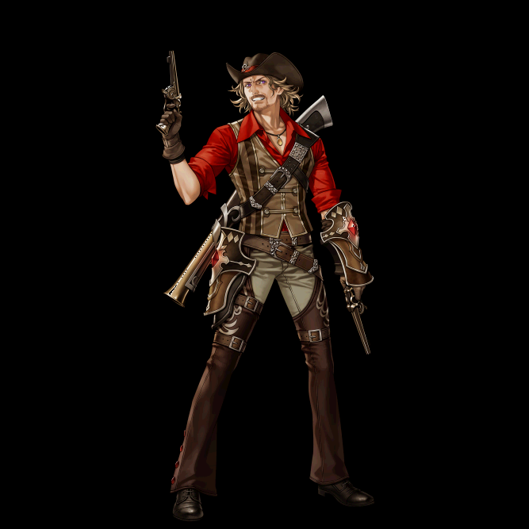
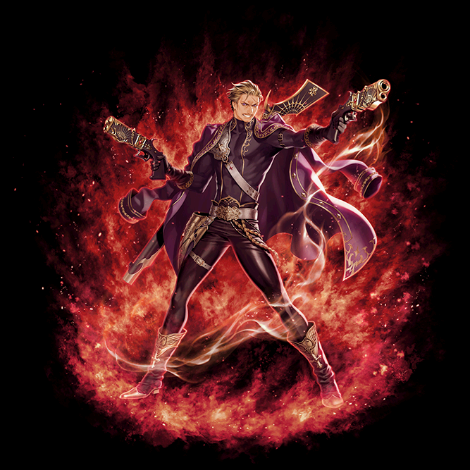
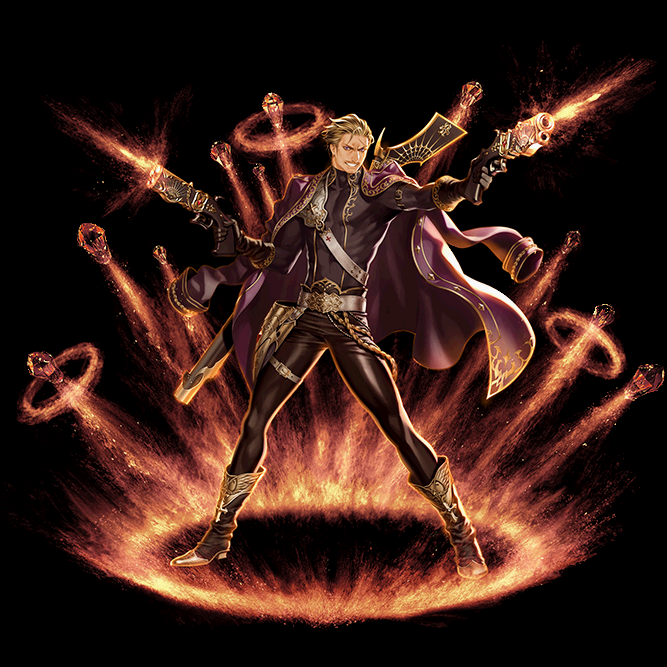
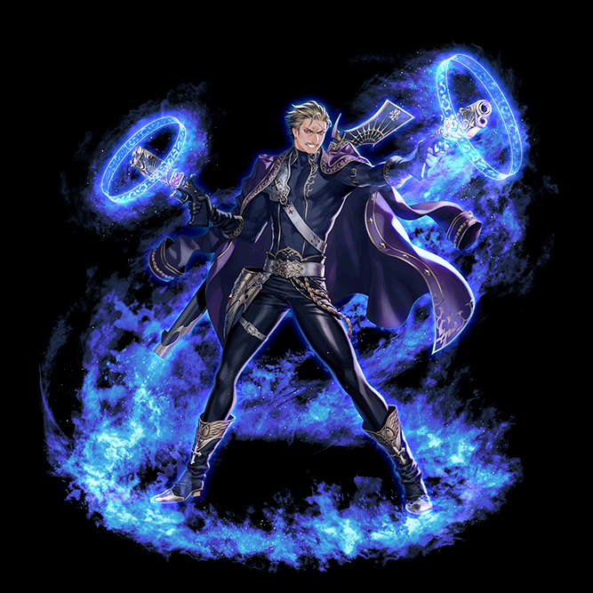

マスケッティア キャラ育成まとめ
通称マスケ。中・近距離＆物理特化の対ボス性能の高いアタッカー。
通常スキル(2020版)
覚醒スキル(2020版)
アルティメットエンフォーサー
ラピッドデスペラード
アブソリュートヒーター
その他スキル
おすすめ装備
概要
中・近距離＆物理特化のアタッカー。ダメ倍率加算や最終ダメUP、限界突破など、物理としては割とオンリーワンな性能も目立つキャラ。
単体に対して異常な火力が出るが、範囲狩りは苦手。
アルティメットエンフォーサーが人気。
アルティメットエンフォーサー
通称、長銃覚醒。
魔力弾というスキル使用回数制限（事実上のCT）と引き換えに、
高倍率＋確定致命打＋独自の限界ダメ突破という性能を持つ。

【デアデブル】
[専用覚醒スキル] [パッシブスキル]
攻撃時40%の確率で魔力弾を生成
その内20%の確率で特殊弾になる
そこそこな頻度で発動するので弾の管理の煩雑さがかなり改善される。
通常が赤なのに対して特殊弾は青で威力が10％上がる。

【グラインディンツポイント】 （元：ホロウポイント）
[専用覚醒スキル]
魔力弾を1つ消費して、指定方向に扇状範囲の遠隔物理5回攻撃
打撃角度60度，射程500

倍率お化けその1。ベース物理ダメージ％が1000％。SLv×40％上がっていく。
「範囲内の対象に5回ずつ攻撃」ではなく「範囲内に最大で5ヒット」なので、
5回（攻撃）ではなく 5発 と捉える方がより正確にイメージしやすいかも？
敵と0距離であれば5ヒットするが、離れていると1ヒットだけになる。
弾が敵を貫通しないため、実質単体向けのスキル
【パンピングヒット】 （元：アブゾーブヒート）
[共通覚醒スキル]
魔力弾を2～4発充填する
20%の確率で特殊弾を充填
最大充填率：2発（35%）/3発（45%）/4発（20%）（SLv108）

魔力弾を任意のタイミングで溜められる貴重な手段。
数はランダムでSLv次第で3～4発の確率が上がる。
【パーティーフルスイング】 （元：パーティータイム）
[共通覚醒スキル]
倍率お化けその2。ベース物理ダメージ％が2750％。SLv×50％上がっていく。
魔力弾を全て消費して、座標指定の遠隔範囲物理攻撃
範囲2.5m

弾数に応じて威力UP、5発全弾発射時はまさに ロマン砲 。
しかしダメージを高くしすぎるとダメループが発生し、攻撃がMISSになる現象が起こる。
(目安としては、実ダメージが4000万を超えた辺りでループ発生)
加えて以下スキルも重宝することがあります。
【ソーサラーズリロード】
[パッシブスキル]
▪ 10秒毎に魔力弾を1発充填（Max5発）
▪ 長銃スキルの物理限界ダメージ20%UP
弾の補充と威力に関わる最重要スキル。
更に長銃スキル限定で魔法型の限界突破が追加される。
このスキルのおかげで物理職が頭を悩ませる要因の一つであるダメージの上限が無くなる。
余談だが、獅子仮面などに付いている動物型ダメージ特攻や、みんな大好き遺物ヘクターの神獣型ダメージ特攻を組み合わせるとダメージが激増する。

【エンジュアー】
[リアクション（ON/OFF）スキル]
▪ 魔力弾の充填時間を短縮（Max5秒）
▪ 長銃スキルの致命打率を100%に固定＋長銃スキルの致命打威力UP
絶対に致命打にするし、白ダメやダブクリにはさせない！というスキル。
狩りにおいては武器が優秀なため、ダブクリを出すのは難しくないため基本OFF推奨。
致命減の装備が揃っておらず、白ダメが出る人はONにすると良い。

ラピッドデスペラード
「標識マーク」という固有のデバフを駆使して戦うタイプ。
【サイトアンドトラック】
[専用覚醒スキル] [パッシブスキル]
1秒毎に自分周囲（500）の対象に標識（60秒）付与
このスキルは自分がアクティブな時のみ適用される
壁越しでも付与可能な自動タゲ取りマシーン化スキル。
アクティブの判定が若干微妙でたまに発動しない事も。
標識の詳細な効果は後述（ファジスタントマーク参照）。

【キングメイト】 （元：チェックメイト）
[専用覚醒スキル]
対象指定の遠隔物理連続攻撃（Max10回）
クリティカル攻撃時、確率で限界ダメージを突破した50%分の追加ダメージ。
発動率：5*（標識の数＋1）%
最大25%の確率で魔法型の限界突破Lv8.5相当が発動する。
説明の中の致命打とはクリティカルの事で、ダブルクリティカルの時には発動しない。
一方で長銃スキルは確定20%突破で、条件が緩く、あちらの火力の高さも考慮すると、見劣りする。
余談だが、2023年5月現在のバージョンでは、対人MAP（PvPマッチング・ギルドバトル・攻城戦）でダメージの表記は出るが、実際はダメージが入っていないバグが発生している。

【ファジスタントマーク】 （チェックマーク覚醒）
[共通覚醒スキル]
対象指定の遠隔物理攻撃＋標識（60秒）付与
既に標識が付与されている場合は累積させる
このスキルでのみ標識を2個以上に累積させることが可能。
個数となってるが、実際は色が変わるので段階という感じ。
①黄→②赤（SLv+19）→③桃（SLv+29）→④赤（SLv+59）
赤は2回あるが④の方ではアイコンが若干違うものになる。
何故か実際の挙動だと②の赤を飛ばして①→③と増える。

【バーストファイヤー】 （スクウェアエイム覚醒）
[共通覚醒スキル]
対象指定の遠隔物理攻撃（確率で貫通）命中した対象に標識が付与されていた場合は
対象中心の範囲（250）に追加物理攻撃（2回）貫通率：75＋SLv（%）
マスケで事実上連射可能な唯一の範囲攻撃スキル。この覚醒タイプで狩りをするならこれになる。
密集しているとそれぞれの追加ダメージがお互いに入る。例えば2体命中、共に範囲内なら追加攻撃4回ずつ。

アブソリュートヒーター
水晶をばら撒き爆発させたり吸収してぶっ放したりと、
とにかく全体的に挙動が派手。

【水晶学】
[専用覚醒スキル] [パッシブスキル]
▪ 攻撃時20%の確率で対象の側に魔力水晶を生成（5秒）
▪ 魔力水晶に接近時、自身に吸収する（累積/最大3個）
このスキルの魔力水晶付与率は体感だとかなり低い。カーテンタイム使用が前提という感じ。
吸収は生成後に移動して範囲(1,5m)内になった時点で行う。
つまり棒立ち状態だとすぐ側であっても全く吸収してくれない。
吸収後は自分にオーラを纏う（見た目は①黄→②青→③桃）。
撒いた水晶は5秒で消えるが吸収した分は消費まで永続。

【カーテンタイム】 （元：ターンイットオン）
[専用覚醒スキル]
座標指定の範囲（400）物理攻撃
命中時に魔力水晶をばら撒く（5秒）水晶の数Max10個，クールタイム3秒
魔力水晶供給用のスキル。水晶の散らばる範囲はランダムで毎回かなり異なる。
水晶は命中時のみ(？)ばら撒くようなので、空撃ちして吸収するというのはできない。

【フォーカスドチョイス】 （元：ケアフルチョイス）
[共通覚醒スキル]
対象指定の遠隔物理攻撃（必中＆確定致命打）魔力水晶を吸収して保有している場合は1個消費して、対象中心の範囲（400）に追加物理攻撃（2ヒット*2回）
致命打確定とキャラＬｖ*1.5の追加攻撃力(？)があり他よりも火力が出しやすく、
覚醒前（ケアフル）だとマスケのメインスキルと断言しても良い程の働きっぷり。
覚醒後の変更点は水晶を消費した追加攻撃による疑似範囲＆多段化。

【グランド・フィナーレ】 （元：アトラクションドロー）
[共通覚醒スキル]
自分中心の範囲物理多段攻撃。距離500以内の魔力水晶を爆発させて追加物理攻撃
打撃範囲300，打撃数Max12回，クールタイム3秒，爆発範囲200
理論上はスキルの打撃数12＋爆発10の最大計22回攻撃。
実際はカーテンタイムのばら撒きが広範囲に散らばるので、22ヒットさせるのは難しい。
なお覚醒で打撃範囲が広がるので他タイプでも取得は推奨。
覚醒前では視界展開、覚醒後は領域展開で打撃範囲が広がる厄介なスキル。

その他通常スキル
【パラマウントフォーカス】
[リアクション（ON/OFF）スキル]
致命打率/致命打威力/ブロック無視（貫通）確率UP
1秒毎に更新（CP消費）
致命打率は最大20%(SLv95)、クリティカルダメージ増加は最大35%(SLv109)
ブロック無視確率は最大40%(SLv117)
このスキルの致命打ダメージ増加は、ダブルクリティカルダメージも伸びる。霊術師のクルーエルソウルの個人用だと思って良い。

【オーバーブレッド】
[リアクション（ON/OFF）スキル]
物理与ダメージに比例した追加火属性ダメージ
1秒毎に更新（CP消費）
基準となる与ダメは白ダメ（致命打が乗る前）の模様。
属性強化などは効果がないので、気持ち程度弱化を積もう。

【リボルバースナップ】
[パッシブスキル]
攻撃速度UP（Max35%/SLv75）
マスケは攻撃速度に関してはモーションの関係もあり積んだところで速度が出ないので前提分でOK

【チップフォーユー】
[パッシブスキル]
最終ダメージUP（Max25%/SLv67）
最終ダメなので表記上では変わらないが、実際の与ダメはちゃんと増える。
長銃覚醒が限界突破を無視して高火力になる要因のひとつ。
さらにスキルでの最終ダメージなので対人MAPでも効果が出る。
余談だがアリーナで行われているGVは表記制限がかけられているが、マスケは色々と表記の外から実ダメを伸ばす手段が豊富。

【ウイーゼルアウト】
[パッシブスキル]
回避率UP（Max8%/SLv70）
特にヤティカヌ以降の狩りで便利。

【アクロバティックガンナー】
自分中心の範囲（150）物理多段攻撃
▪ 対象にノックバック（75）＋硬直（2秒）付与
▪ 自分の最終ダメージUP（20%/5秒）
クールタイム15秒
（実質）最終ダメバフスキル。
タゲ指定は不要だが、対象不在の場合は発動不可。最終ダメ増加なので蹴りを入れて長銃を撃つのが最高火力だが、蹴るとノックバックが発生する。

おすすめ装備
武器：
協会武器
レーザーガン
パーティクルジェネレーター（775UMU）
クリティカルヒット（1000UMU）
補助武器
溶岩の心臓
ヒュージョンクォーツ
王室の強堅
首
雷音
純愛
頭
獅子仮面
頂の上
精霊王（オーバーブレッド用）
オラクルサークレット
背中
威風堂々
ディザスター
静かな叫び
腰
遺物ヘクター
手
タルタスの懲罰
ゴットハンド
グリッドシーカー
鎧
ドワーフの産物
ポケット付きコート
足
騎士道
巨人の足裏
スタチューブーツ
推奨ビルドについて
狩り編
覚醒はアルティメットエンフォーサー一択。
標識覚醒は範囲技があるがしっかり一筋状に釣らないといけなく、手間がかかる。
水晶覚醒はCT短縮を積んでいくとどうしてもアトラクションドローの方がCTが短くなる都合で、水晶＋アトラクで倒せない場合、アトラクを連打することになる。
更にアトラクは専用覚醒スキルではないため、長銃覚醒でも取得が可能なため。
上位の狩場に進むにつれ、敵のHPは増加していくので上限を取っ払える長銃覚醒を勧める。狩りの感覚としてはめっちゃダメージが出るパラ剣士。
対人編
アルティメットエンフォーサーがとても強い。
理由として、相手が致命打抵抗を積んでいようと関係なくクリティカルが出せるエンジュアーがあるので、最強図案所の純粋が使用できる。更にダメージ倍率が頭一つ抜けているため、ダメージも出しやすい。
表記制限があるアリーナGVにおいては、標識覚醒一択になると思われるが、現在バグでダメージが発生しないため、選択肢がほかにない。
水晶覚醒は1秒に12～22HITのアトラクが撃てるが、対人に置いては一人まず落とす方が重要だと思うため単体最強の長銃覚醒を推奨する。
まとめ
単体に対しての火力は全職No1を争えるので、対人は楽しい。一方でレベリングの狩りはかなり苦しい。
ヤティカヌ星降る以降のMOBはとてもHPが高く倒しにくいが、マスケッティアなら単体限定となるが難なく倒すことも可能

致命を割れなくてもクリティカルダメージ増加を整えればそれなりにダメージを出せるため、金鯖などでは強いかもしれない。
補足
マスケは2023年にスキルの大幅改変が予定されております。本情報は2023/5現在に基づく育成情報であるため、改変後の情報とは異なる場合があります。
Special Thanks!!
| ・執筆・監修 | どんの助 様 |
| ・協力 | ゲームよろず 様 【RED STONE】マスケッティア スキル紹介 |
| ・執筆 | そこらの民衆 |